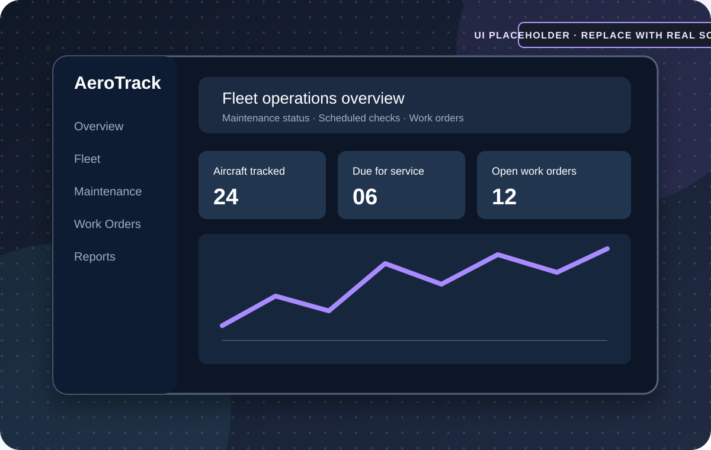
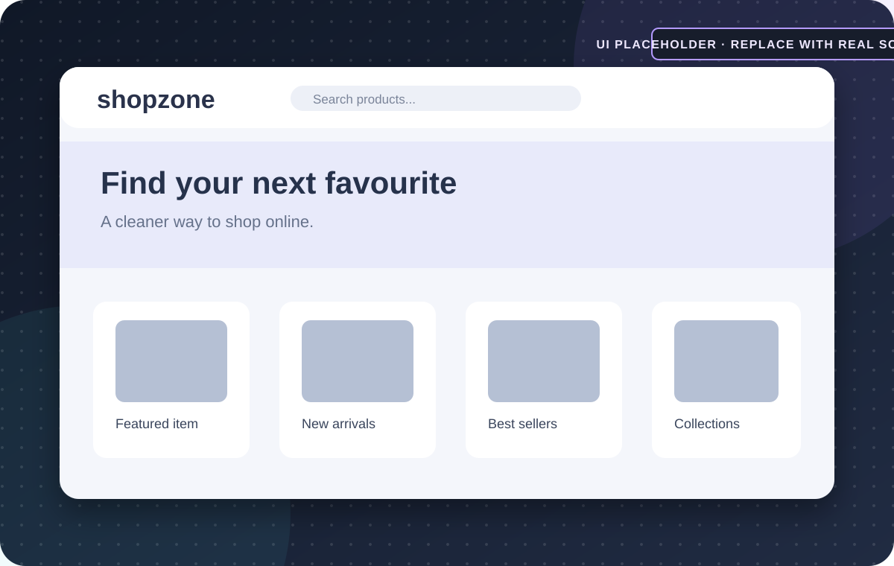
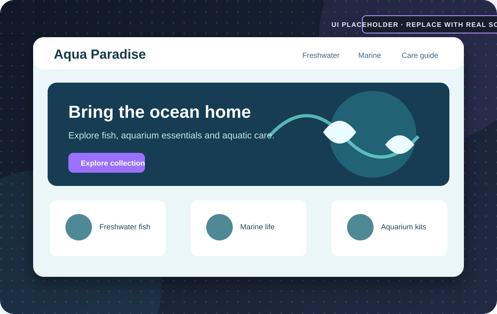
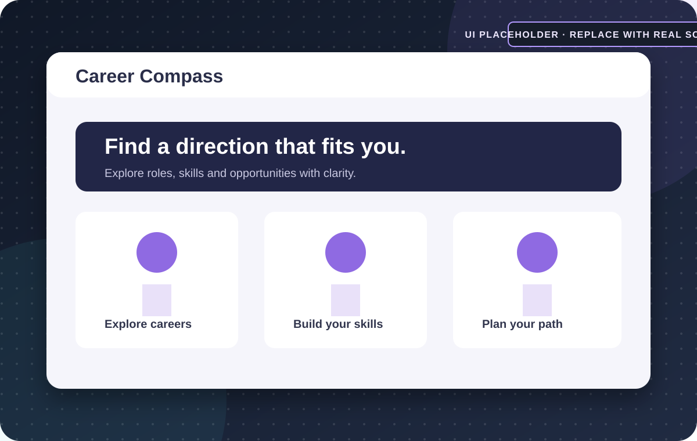

EducationB.E. Electronics & Communication
Hello, I'm
AMIRTHAPRIYAN J.
Software Professional
I build reliable web applications and practical software solutions with Java, React and Spring Boot. I enjoy solving real problems, learning continuously and turning ideas into useful digital experiences.
Explore My Journey →
ExperienceInternships & Graduate Training
ProjectsFull-stack & Embedded
CurrentGraduate Trainee · Psiog
ABOUT ME
More Than Just Code
I’m a curious, growth-minded person who enjoys new challenges, meaningful collaboration and discovering fresh perspectives. I value consistency, creativity and learning from every experience—both at work and beyond it.
Know More About Me ➜MY SKILLS
My current toolkit, organised by the areas I explore and work with.Languages
JavaC++CJavaScriptSQL
Frontend
React.jsHTMLCSS
Backend
Spring BootNode.jsExpress.js
Databases
MySQLMongoDB
Tools & Platforms
GitGitHubPostmanVS CodeArduino
AI-Assisted Development
Generative AIPrompt Engineering
MY JOURNEY
Professional
Journey
A timeline of key milestones that have shaped my personal and professional growth.
From my ECE foundation to embedded systems and full-stack engineering, each step has added a new layer to how I approach technology. I have moved from connecting physical components and sensors to building web applications, REST APIs and data-backed workflows. Today, my Graduate Trainee experience at Psiog is helping me strengthen those fundamentals through structured learning, practical assignments and collaboration.

OCT 2022 – MAY 2026
B.E. – Electronics & Communication Engineering
Sri Krishna College of Technology | CGPA: 8.35/10. Built a foundation in electronics, communication systems, programming and analytical problem-solving. Developed a broader engineering perspective through core ECE coursework and practical project work.
Coursework and practical work connected electronics fundamentals with programming, systems thinking and problem-solving.

JUN 2024 – JUL 2024
Embedded Engineer Intern – KrishtTec
Worked with ESP32, RTC and sensor modules for an IoT display system. Integrated hardware components, tested sensor-driven behaviour and gained practical exposure to embedded development and connected-device workflows.
Hands-on exposure included ESP32 development, RTC integration and sensor interfacing for an IoT display workflow.

MAR 2026 – JUN 2026
Full Stack Engineering Intern – Cognizant
Built AeroTrack, an aircraft fleet maintenance management platform using React.js and Spring Boot. Developed REST APIs backed by MySQL, implemented deterministic maintenance scheduling rules and supported recurring 12-hour maintenance checks.
The project combined React.js interfaces, Spring Boot REST APIs, MySQL persistence and deterministic maintenance scheduling, including recurring 12-hour checks.

JUN 2026 – PRESENT CURRENT
Graduate Trainee – Psiog
Currently working as a Graduate Trainee at Psiog, contributing to software development assignments and structured technical training. Strengthening programming, database, problem-solving and collaboration skills through hands-on tasks and regular practice.
The current training phase focuses on strengthening software engineering fundamentals through structured assignments, database practice and collaborative learning.
FEATURED PROJECTS
Solutions I've Built
A showcase of projects that reflect my technical skills and problem-solving approach.
View All Projects ➜
✦ FEATURED PROJECT
Fleet maintenance, service scheduling and operational visibility in one platform.

FULL STACK · COGNIZANT
AeroTrack
An aircraft fleet maintenance management platform that brings aircraft status, service schedules and maintenance work orders into one workflow. Built with React.js, Spring Boot and MySQL, with deterministic maintenance rules and recurring 12-hour checks.
Full StackSpring BootReact.jsMySQL

ShopZone
A MERN-stack shopping platform covering product discovery, product details, cart management and order workflows. Built to practise full-stack integration, reusable React interfaces, Express APIs and MongoDB-backed data handling.
MERNNode.jsExpress

Aqua Paradise
A responsive online fish-selling and aquarium store concept, organised around fish categories, aquatic products and care essentials. The interface focuses on clear product discovery and a welcoming visual experience for aquarium enthusiasts.
React.jsReduxCSS

Career Compass
A career guidance website that helps users explore possible roles, understand relevant skills and plan practical next steps. The project brings career information and recommendations into a focused, easy-to-navigate experience.
MERNAI
FEATURED INTERESTS
Things I Enjoy
MY HOBBIES
Beyond Work
The interests that keep me creative, curious and balanced outside the screen.
MY FAMILY
My Support System
The constant source of encouragement, strength and motivation behind every step of my journey.
Every milestone means more when I have people who believe in me.
GET IN TOUCH
Let's Connect
Have an idea, opportunity or just want to say hi? I'd love to hear from you.
amirthapriyanjayabalan@gmail.com
Coimbatore, Tamil Nadu, India
linkedin.com/in/amirthapriyan
github.com/amirthapriyaan
OPEN TO CONNECTIONS
Let's exchange ideas.
I'm always glad to connect with people who enjoy building, learning and sharing thoughtful ideas. Find me through the channels listed here.
Start a conversation ↗